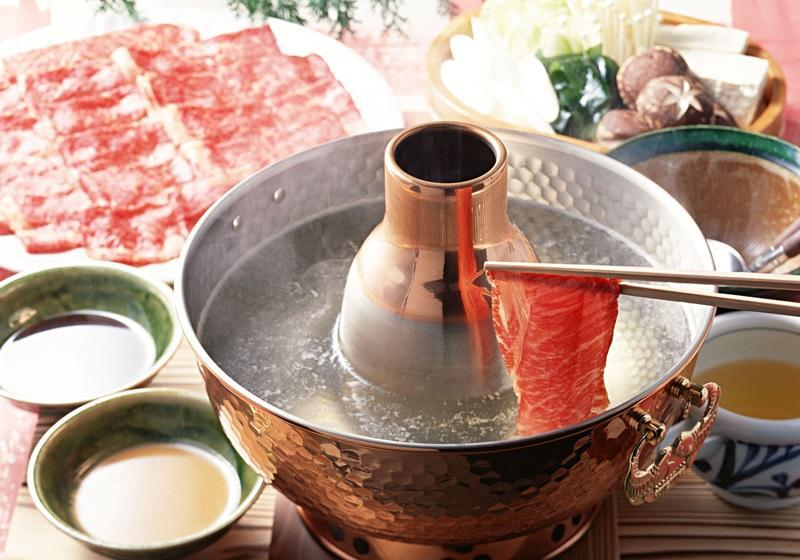
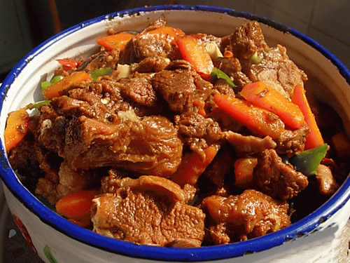
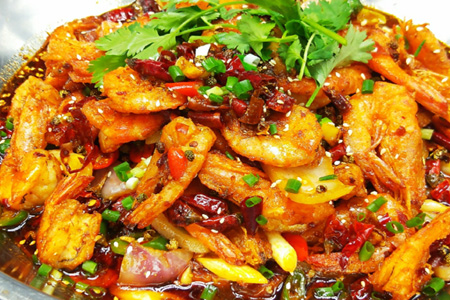
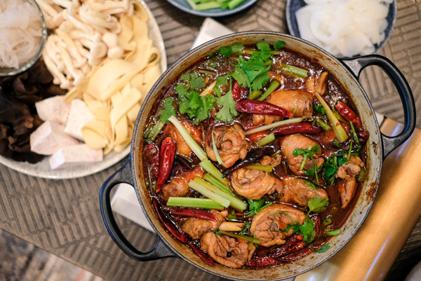
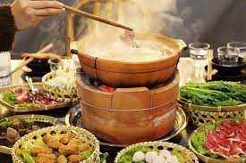
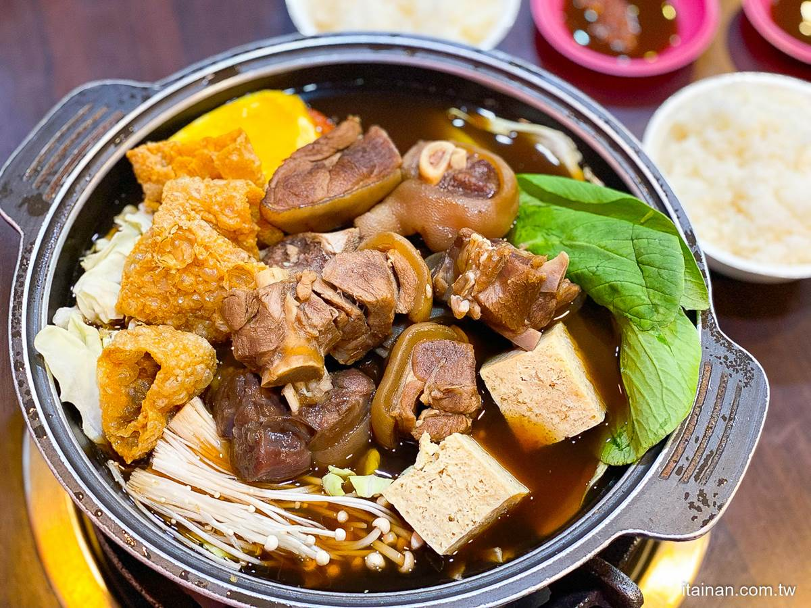
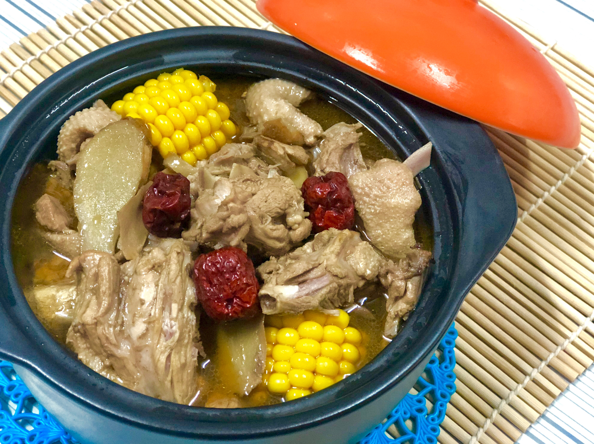
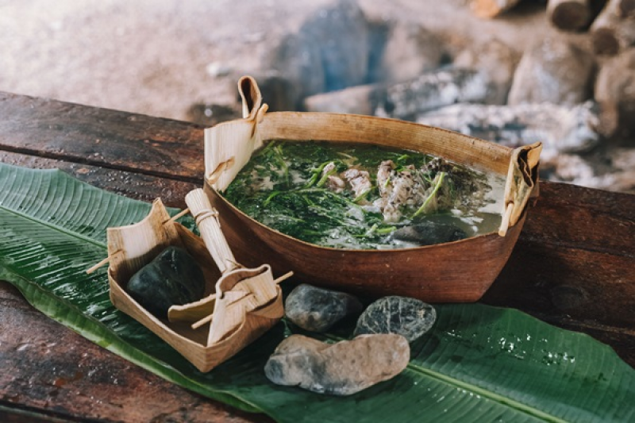
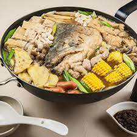

相傳是蒙古軍隊的一種烹食方法，所以在國外又稱蒙古火鍋，具有北京特色的火鍋。其吃法是將羊肉(後來也增加肥牛等)、蔬菜、豆腐等食材，用沸騰的清湯涮熟後沾調料食用。由於羊肉加熱易熟，但加熱時間長反而會硬，所以開水短時間一涮即好，隨吃隨涮。 
主材料為酸白菜、豬五花肉，是清朝滿洲人風俗，風行於中國東北，後傳入北京。吃法是使用生炭火的銅鍋，將酸白菜與高湯煮成鍋底，白肉則以涮熟食用。

以事先炒過的羊肉再加入二十餘種食材與藥材料燜煮成鍋底。吃法是先吃鍋內羊肉，然後放入其他煮料以剩下的湯汁進行涮食。屬於河南新鄉的地方名吃，在北方其它地區也有流行。亦有紅燜狗肉、紅燜兔肉、紅燜鴿肉等變化品種。 
晉中火鍋使用木炭銅鍋，將食材與佐料、高湯放至鍋內，煮熟後一邊加熱一邊從中撈取食用，沒有涮的吃法。
將臘味如臘雞、臘魚過水過油後，加入料酒及大蒜、薑片等一起煸炒，再放入辣油鍋中煮成為鍋底。

起源於重慶的毛肚火鍋，承襲重慶、四川、貴州等地的重口味。麻辣火鍋原本以毛肚為主材料。後來此種吃法隨船工流傳至重慶小米街一帶，由此發揚光大。麻辣火鍋目前是中國最普遍的火鍋種類。重慶火鍋的主要菜品與北方火鍋差異非常大，主要以毛肚、黃喉、鴨腸、雞雜、豬腦、豬腰花、牛羊肉、黃鱔等為主。值得一提的是，重慶火鍋的調味碟是由香油、蒜泥、耗油混合而成，把菜在這裡面涮一道再吃能有降火作用。重慶火鍋以麻辣鮮香著稱，以牛骨、豬棒骨熬湯為主要原料，辣椒則使用較四川辣椒更辣的貴州朝天椒，屬醬香味。

幹鍋是重慶火鍋的一個分支，使用100%的油取代火鍋中的水。幹鍋是一種食品，或被理解為一種食品烹飪方式。製法上與傳統火鍋不同之處在於鍋底沒有加水而直接用紅油煮菜，比火鍋溫度更高，燒出之菜有炒菜的焦香。但重慶市民認為幹鍋較火鍋容易「上火」。2004年後幹鍋在重慶開始大面積傳播，2005年後傳向東部各地和南方廣東等地。 
「先吃雞再打邊爐」的食法，已煮熟的辣雞以瓦煲盛載，吃完才加入豬骨湯底打邊爐，火鍋食材包括肥牛、肉丸、餃子等。 
成都火鍋的鍋底以雞、魚熬湯為主要原料，有香料，辣椒使用四川二荊條辣椒，口味上來講是五香味和豆瓣味，口感溫和。

俗寫打邊爐，嶺南地區人士(特別是廣府人)把吃火鍋讀成「打邊爐」是有典故，是根據(元)呂誠《來鶴亭集．南海口號六首．其五》：「炎方物色異東吳，桂蠹椰漿代酪奴。十月煖寒開小閣，張燈團坐打邊爐。」所以是粵語對火鍋的統稱，常用高湯及沙嗲湯，兩湯同吃稱為"鴛鴦鍋"，燙熟食物後沾醬油食用。其中港式火鍋的鍋底並以配料眾多為特式。肥牛肉、鯇魚片、鱔片、象拔蚌、生蠔、魚滑、蝦滑、三文魚，以至鵝肝、霜降牛肉、各類肉丸、香腸、各豆類製品、各種蔬菜菌類、餃子麵食等，均是熱門配料。 
把半隻至一隻的生雞連同花雕酒以及當歸、北芪、枸杞等中藥材作為鍋底，流行於香港及廣東各地。

即用大米熬成的粥來做火鍋湯底，起源於廣東順德。

源自澳門，但流傳到深圳和香港後有不同變化。深圳的豬骨煲發展為湯類煲仔小菜，以吃豬骨邊肉、吸食骨髓為主；香港吃法則比較接近澳門，注重鍋底和配料，並發展為火鍋。其作法是用豬大骨與其它材料一起熬煮，再加上白鬍椒和粗鹽調味而成奶白色的火鍋鍋底。

或稱野生菌火鍋；以各種可食用的菌菇類熬煮成鍋底或汆燙後食用。

起源於昭通，屬藥膳火鍋的一種。以雞肉與宣威火腿為主要食材，配以昭通天麻、三七、田七、大棗、枸杞等中藥材烹煮成鍋底。

以鰱魚或鯽魚為主食材，配上昆明特有的糊辣味為其特色。現在日常生活中說的火鍋通常是以前兩種為主。

材料是雞肉、米酒、當歸、枸杞、黃耆、川芎、甘草、薑和冰糖。能補血、活血、行氣、健胃、增強身體抵抗，促進新陳代謝、消化吸收及血液循環，是寒冷冬天活血暖身、舒筋養骨、溫補虛寒的常見藥膳。

將羊大骨、汆燙過的羊肉塊及各種中藥材一起熬煮成鍋底，用豆腐乳或辣豆瓣醬做為沾醬是其特色。 
將鴨肉與老薑及麻油拌炒，再加米酒及水燉煮的一種火鍋料理。一般都使用豆腐乳做為沾醬 
以大骨高湯加上辣椒、花椒、醪糟和許多辛香料調製成麻辣鍋底，然後再加入材料有鴨血、肥腸和豆腐等，味道厚重，油厚濃腴，既麻且辣，十分適合冬日食用，以袪除風寒。

源自日本，在臺灣經過修改，成為台灣最普遍的小型火鍋種類。特色為生食材放進鍋裡燙至剛熟就撈起來吃。
以10到15年生的檳榔葉柄開頭處的葉梢摺疊成盒狀，盛滿水後將魚蝦和鹽放入，再逐一放入燒燙的石頭(雞蛋大小的麥飯石或蛇紋石)，直至湯水沸騰後放入野菜汆燙。 
以事先煎過的鰱魚頭或草魚頭再加入高湯與材料煮成鍋底。 
小火鍋加上烤肉。

每人使用一個小鍋，用大骨熬煮的高湯湯底，加入依個人喜愛的火鍋材料(如各種肉片、海鮮、蔬菜、豆製品、菌菇類、蛋類製品)等。